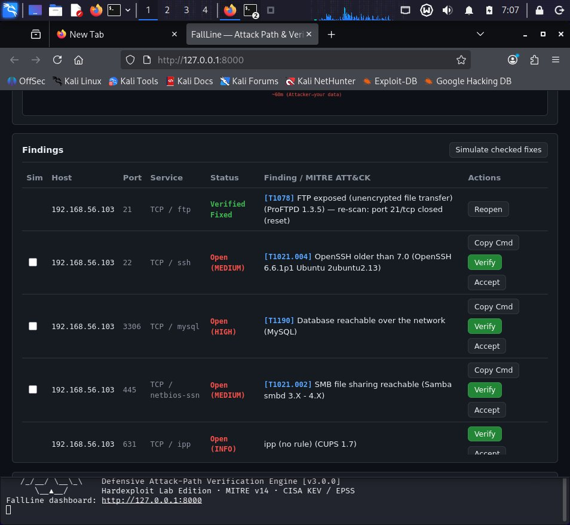
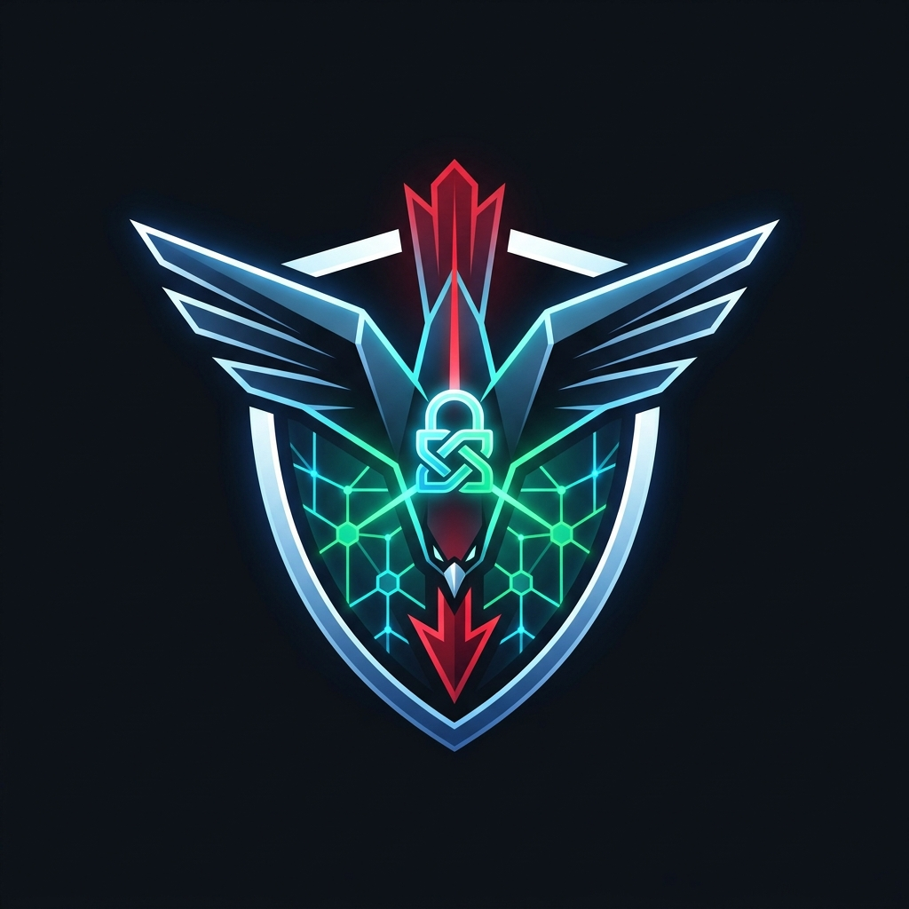

I engineer active defensive systems, graph-theoretic attack-path algorithms, protocol-level proxies, and wire-level verification engines, moving security beyond static checklists to practical, measurable defense.
SECURITY ENGINEERING PRINCIPLE“Security is built by making assumptions explicit, testing them, and proving what a system actually does.”
How I approach cybersecurity: from first-principles socket investigation and attack-path graph modeling to actionable remediation code.
Defensive Systems Builder & Security Engineer (Adeploit)
Traditional vulnerability management relies on tickets and paper compliance. If an engineer marks a CVE as resolved, standard tools stop checking. My philosophy begins with zero trust: never trust a closed ticket. FallLine initiates a targeted TCP socket handshake against the exact port to confirm a ConnectionRefused or TCP RST response before granting verified status.
Defenders drown in 500-page scanner outputs, but attackers don't think in isolated lists; they think in graphs. I engineer graph-theoretic attack simulators using Dijkstra's shortest-path algorithms to model how an external adversary traverses from initial perimeter exposure into sensitive database assets, measuring realistic Time-to-Compromise (TTC).
Identifying an exposure without an actionable fix creates operational friction. My systems generate production-grade remediation templates for SecOps review (Ansible playbooks and Terraform HCL) directly from vulnerability findings, allowing IT and SecOps teams to harden firewalls, disable vulnerable daemons, and close choke points across fleets.
A defensive vulnerability assessment and attack-path analysis engine that models systems as a domino run, calculates real Time-to-Compromise (TTC), ranks choke-point fixes, and verifies remediations by re-scanning only the fixed port.


Graph-Theoretic Attack Modeling & Real Re-Probe Loop
Graph-theoretic attack-path modelling using a Python Dijkstra shortest-path engine (heapq), with optional NetworkX graph support, to estimate Time-to-Compromise (TTC).
Ingests BloodHound Active Directory JSON paths and audits live domain SPF/DMARC records (RFC 7208 / 7489) alongside socket-level network reconnaissance.
Ansible remediation playbook generation, alongside experimental Terraform HCL drafting for infrastructure-security review. Generated Terraform examples require engineering review and do not currently revoke existing ingress exposure.
Never trusts a marked ticket. Sends a targeted TCP socket probe to re-verify the weakness is dead before awarding the green Verified Fixed status.
Inspect illustrative CLI output, generated Ansible remediation playbooks, and verification workflow examples modeled on a Metasploitable 3 lab target. This static preview does not execute live scans from the browser.
kali@AdeXploit:~/FallLine$ python3 -m fallline.cli scan --scope scope.yaml --target 192.168.56.103 [*] Illustrative Example Output (Static Preview, Not Live Execution) [*] Target: 192.168.56.103 | Lab profile: Metasploitable 3 (ProFTPD 1.3.5, MySQL) === EXAMPLE ATTACK PATH ANALYSIS (EXTERNAL ADVERSARY) === [1] 192.168.56.103:21 (FTP / ProFTPD 1.3.5) └── CVE-2015-3306 (mod_copy) | MITRE: Unmapped [2] 192.168.56.103:3306 (MySQL) └── Effort: 45 min | Access: Network-exposed DB | MITRE: T1078 (Valid Accounts) [3] TARGET: Sensitive Data Asset └── Illustrative chain TTC: ~60 min total attacker effort [+] CHOKE POINT IDENTIFIED: Remediating Port 21 (FTP) and Port 3306 (MySQL) breaks the modeled chain. Example remediation shifts attacker Time-to-Compromise (TTC) from 60 min to > 495 min.
kali@AdeXploit:~/FallLine$ python3 -m fallline.cli export-iac --format ansible --- # FallLine Automated Remediation Playbook (Example Output) # Purpose: Neutralize attack-path choke points for SecOps review - name: Remediate FallLine Attack-Path Choke Points hosts: all become: true tasks: - name: Neutralize FTP Daemon (ProFTPD) ansible.builtin.systemd: name: proftpd state: stopped enabled: false ignore_errors: true - name: Block Inbound Port 21 (FTP) community.general.ufw: rule: deny port: '21' proto: tcp - name: Restrict MySQL to Localhost Only ansible.builtin.lineinfile: path: /etc/mysql/mysql.conf.d/mysqld.cnf regexp: '^bind-address' line: 'bind-address = 127.0.0.1' notify: Restart MySQL ignore_errors: true
kali@AdeXploit:~/FallLine$ python3 -m fallline.cli verify --scope scope.yaml --key <finding-key> [*] Illustrative Example Output (Matches Captured Lab Screenshot for Port 21) [*] Re-probing 192.168.56.103:21 (TCP)... [+] Socket connect attempt timeout: 3.0s [-] ConnectionRefusedError: [Errno 111] Connection refused (TCP RST received from host) [*] Evaluating state against verification criteria: - Previous State: OPEN (ProFTPD 1.3.5 on port 21/tcp) - Re-Probe State: port 21/tcp closed (reset) - Vulnerability Status: FIXED_VERIFIED [+] VERIFICATION COMPLETE: Finding marked FIXED_VERIFIED in data/fallline.db. Re-verified on the wire before closing the finding.
Explore my complete library of defensive protocol engines, active deception traps, AI auditors, and production platforms.
Battle-tested methodologies and tooling applied across active virtualized lab environments and cloud infrastructure.
I am actively seeking remote cybersecurity opportunities (Vulnerability Management, Security Operations, Junior Penetration Testing, Security Engineering) and freelance infrastructure security assessments.